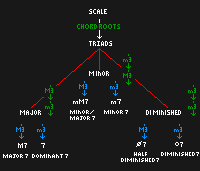
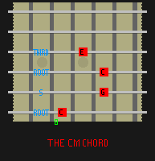
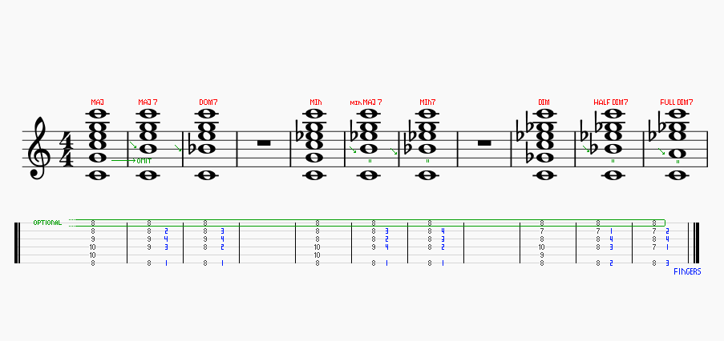
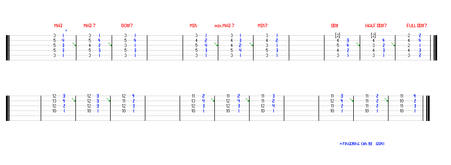

GROWL
I'd rather be playing guitar
 EN
EN
BEFORE YOU START
This article extends what we did in this article with triads on the guitar. Next we consider chords built by extending a triad with a seventh interval from root. The theory about that I went into here.
Once again two simple rules before you touch the guitar:
- 1. Make a mental effort to only ever have tension in a finger that presses a string; leave the others loose.
- 2. Unless otherwise directed your chord making hand should arch its fingers so only the fingertips press single strings.
- 3. And of course DON'T STRAIN! If it feels awkward, stop and rethink your hand position. Still awkward? It might be time for a rest.
More on this to follow in a photo guide to hand position.
SEVENTH CHORD RECAP
Seventh chords appear diatonicaly (within key) by stacking three thirds on top of each other from a root note. Eg: in C Major we have CEGB from the tonic note C or DFAC from the supertonic note D. Because scales are built on a specific formula eg(TTSTTTS), the "quality" of the thirds between notes in the scale varies. For example C-E is a major third (C-C#-D-D#-E, 4 semitones from C to E), but D-F is a minor third (D-D#-E-F, 3 semitones from D to F). When the third in the chord occurs between the chord root and the chordal third eg(C-E in CEG) it dictates the tonality of the whole chord, in this case meaning we have a C major chord.
Seventh chord tonality is set by the third of the chord in the same way as triads. On top of the triads though, we can add each type of third (in blue below) to create a seventh chord and make an even greater variety of chords.
There's a lot of terminology attached to naming chords; I've included the most common symbols in the diagram above. You might see other things used sometimes such as a triangle for a major 7 chord. Half diminished sevenths are sometimes called minor 7 flat 5 chords or (m7b5).
STRING SEPARATION
How you fret these chords is important. Now that we have 4 distinct tones in the chord we're approaching the limit of what your fingers can find and to some extend what the guitar can neatly express. Once we get to seventh chords it is common to start leaving out the fifth. If you have a keyboard handy, try playing a 7th chord with and without the 5th note inside. In the case of all but the diminished chords, it doesn't do that much - it either adds stability, richness or murkiness depending on the instrument and personal preference.
When you think about the triads that we played before we used a doubled root note (CGCE was our most common major voicing), that doubled root is very close to the seventh. In CEGB (C major 7) for example we only need to descend a semitone (1 fret) from the doubled root in CEGC to find CEGB. That's perhaps the easiest way to first think about seventh chord shapes on the guitar. Think of a triad and then lower the doubled root.
Without further ado, here then are the 7th chords built on the low E string. Again these are all moveable shapes, meaning that playing the same shape anywhere on the E string will give you the same type of chord from a new root. When omitting the 5 note on the A string this introduces a new requirement. How do you play this chord without sounding that string? The answer is by playing the chord with your right hand fingers rather than strumming with either chord or pick. Strumming patterns can work with this fingering but you will need to either include that 5 or damp it by touching with another fretting finger.
These chords can be a stretch, particularly the diminished chords as they venture away from the barre structure. Go slow and practice placing your fingers before trying to get an even sounding chord. Once you feel more comfortable getting your fingers where they need to go, then think about applying pressure and getting good tones.
Creating 7 chords from A and D string roots follows the same thinking as for E. Take the triad form you would play and then replace the doubled root with the appropriate seven note. Here are those common fingerings.
PRACTISING
Once you start practising seven chords your songwriting chops will get a big boost. You might find that just putting together these seven chords gives you interesting enough ideas for progressions and vamps. That is part of the reason that I strongly recommend writing down chord sequences on a piece of paper; picking up your guitar and then playing that sequence through. Refer back to the page if you forget the order. A good example is to use the blues/pop progressions 1-4-5-1 and the jazz progression 1-2-5-1.
If that just looks like context-free numbers to you then maybe read this article. But let's work through a jazz example. 1-2-5-1 means to take the 1,2,5 and 1 notes of the scale you are in (eg: C major gives C,D,G,C) and use them as root notes for chords. If we stack thirds on these notes we end up with CMaj7, Dmin7, G7 and back to CMaj7. For reasons we will get to later, playing that last CMaj7 as a regular CMaj triad will give you a more resolved sound.
Try changing key to G major and playing the 1-2-5-1 progression. GMaj7 then Amin7, to D7 and back to GMaj. The progression has the same kind of sound as a scale's chords always work out to the same qualities. All that's changing is the root each chord is built from; which of course is a result of the parent scale (G Major).
Go ahead and reward yourself for your hard work by recording yourself playing this progression through a few times. When you play it back, play the notes of the scale over the top. You'll notice that your notes all fit and if you start varying their order they still seem to fit. Congratulations, you have just reached the first milestone on the path to improvisation! You've established a tonal context with your chords and now you can improvise melody inside that context!
Experiment with more progressions by taking the notes of a scale and playing the derived seven chords using the notes as chord roots. Write the notes down in the order that you want to play them first so that you don't lose your place. Write the note names down ONLY, that way mentally you will have to figure out which is the right seven chord to play for that note. REMEMBER, seven chords always land on the same scale notes. There are no right or wrongs here for the order and sequence of chords that you apply. You will perhaps notice though that some chords seem to go together FAR better than others.
IN CONCLUSION
You now know how to play seven chords on the guitar. These are far more complex and interesting than triads and on their own constitute a great songwriting arsenal. These chords can be a real challenge to begin with, requiring use of all fretting fingers and some interesting stretches. Go slow and build up your fluency and these chords will serve you well! I've loosely introduced the topic of chord progressions in the context of practice. Now you know how to build chords without resorting to looking them up, build progressions often. In many ways this forms the core of guitar playing. Articles are coming that will give guidance on how progressions function and what the musical "rules" are for building them coherently.